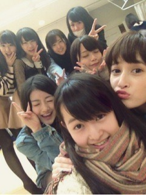

| 2012/12 15 Sat | 318回目*marika |
＼せっちゃーん／

せっちゃんがいると
つい名前呼んじゃう♪楽しい♪
みさと写真撮ったとき、
真顔で「えっ？赤ちゃん...？」
って言われた。

**********
 今でもサンタ信じてますか？
サンタになんかプレゼント頼んだ？
今でもサンタ信じてますか？
サンタになんかプレゼント頼んだ？
 いつの間にかプレゼントは
いつの間にかプレゼントは
パパがくれるようになってるけど
でも！いるよ！きっといるんだよ！←
頼んでないよ

センター試験ムズカシス(汗)
こんな俺はファン失格ですか？
乃木坂センター試験。まりかは
当然、全問正解できたんよねー?
そんなことない！！！
いや、こんな個人的な問題...
勘で当てるしかないよ。難問だよ。
まあ、私は余裕で解けるけどねー
 ♪
♪
♪
...ごめんなさいわかりません
コンビニのスイーツで
ついつい買っちゃうものある？
苺のお菓子で、何が一番好き？
最近買ってないよー
いろんなのあるよね。
大福とか絶対美味...
って誘惑しないでよ～><
苺はどうやって食べるのが好き？
そのまま食べる？それとも、
練乳や牛乳をかけたりする？
そのまま派
イラストの女の子はモデルいるの？
人物画って初めてブログにあげた？
何で書いたんですか!?
想像で、ペンと色鉛筆で描いたよ。
もちろん最初はシャーペンで。
人物画は初めて載せました

ほめてくださって嬉しいわや～
また載せようかなあ
ハズレ動画で
伊藤ちゃんず出てきて衝突してたけどw
あの動画はどっちが考えたの？
あ、コントね笑
なんとなくじゃましてみようかって
みんなで考えたらああなった。
ぐだぐだだけどね。
でもそれが伊藤ちゃんずクオリティ
夜寝れなかったの？大丈夫？
心配おかけしました><
大丈夫です！
最近掃除して部屋がきれいで
新しいストーブ届いたから
椅子から動きたくなくて...←
読書好きですか？
最近本読まないな...読みたいな。
読んでるのは漫画と雑誌だけだ。
チョコケーキはチョコの
ケーキだからで、
チーズケーキはチーズの
ケーキだからなのに、
なんでショートケーキは
苺なのにショートケーキ？
...え、ええ？え？ん？お？
あ(←理解した)それはね、
苺ってストロベリーじゃん。
名前をストロベリーケーキにして
ケーキ屋さんに並べても
ケーキの前に置くプレートに
文字が入り切らないんだよ。
なんでショートかっていうとね、
苺がちっちゃいからだよ。
わかるかあああああい
 ?!
?!
?!
まりっかが使ってる絵文字
すごいかわいいねぇ～
どこの絵文字教えて～
ありがとうございます

絵文字屋っていうところのを
保存してます。
ダイエット中？
意識しないと
いっぱい食べちゃうから...
甘いものはいくない！
***********
あー！今日らりんにぎゅーしてない！
らりんに抱きつきたい気持ち。
落ち着くんだよ。ぬーん

レッスンおつかれ。
前髪もうのびた！切りたい。
生駒のニューヘアーがめっちゃすき。
ずっとなでなでしてた

ショートっていいな...
私は切らんけどなあ！
まりか
コメント(143)
2012/12/15 23:54